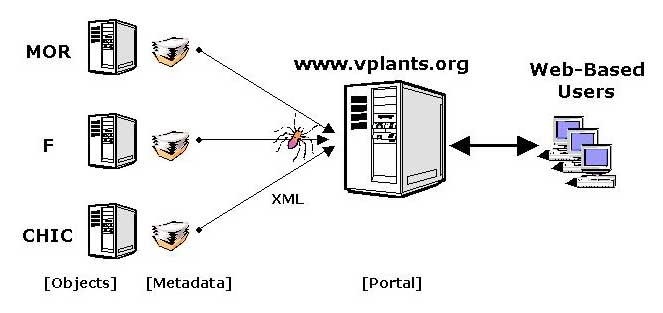
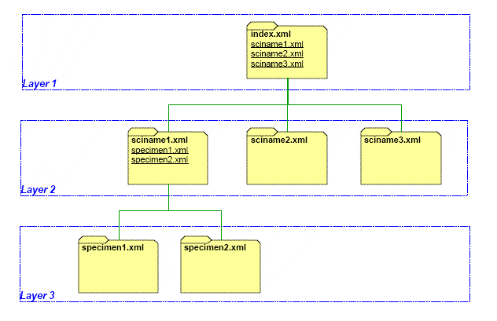

System Overview
vPlants: The Chicago Regional Virtual Herbarium as a model multi-institutional plant data resource
vPlants (www.vplants.org) is a collaborative, on-line herbarium for the greater Chicago Region. The site holds data entered from specimen labels for over 72,000 herbarium specimens housed at major Chicago Region herbaria. The public interface includes background information and the ability to query the database by species, habitat, collectors, collection sites, and other data. An expansion completed in 2006 builds on the database through additions of more broadly usable Web pages, species descriptions, expanded taxonomic coverage to include fungi, and the addition of new partners.
Participating herbaria post their data in XML format, which are read at regular intervals by a Web agent. These data are normalized and stored in an Oracle database. The system is highly expansible: the only requirement of participating collections is that they be able to post data in the required format. The system is tolerant of nomenclatural discrepancies (via synonyms in the checklist) and allows for links to images and supplemental data.
Technical architecture of vPlants. Each vPlants partner publishes Metadata on the Web describing their herbarium specimens. On a weekly basis, a Web agent (depicted here as a spider) is dispatched from the Portal to harvest the metadata, storing it in a searchable format on the Portal.
In the updated version, species descriptions are stored on the server in XML format, and species pages are generated on demand using JSP technology. A photo gallery is generated for each species based on photos that are available on the server. The system is set up so that content changes are immediately visible to the public.
vPlants Metadata Overview
Specimen metadata published by each participating vPlants institution are structured for efficient gathering and storage by the portal's robot (or spider). The metadata consist of three hierarchical layers of XML documents, each described by its own XML Schema. The template is depicted in the following diagram:
- Layer 1
- serves as a starting point or table of contents for each site's metadata, guiding teh portal's robot to the metadata in Layer 2 via uniform resource identifiers (URI; hyperlinks).
- Layer 2
- documents are keyed by the institution's currently accepted scientific names, one document for each unique scientific name. Common names, vPlants taxon ID codes, and specimen ID codes are associated with each name. Specimen ID codes display a "last modified" timestamp and URI to their detailed specimen document in Layer 3. Before visiting the detailed document, the robot checks the timestamp to determine if the document's data has been modified since the last visit.
- Layer 3
- documents are keyed by a unique specimen ID, one document for each unique specimen ID. Detailed specimen information such as collectors, site location, and annotations are provided in the document.